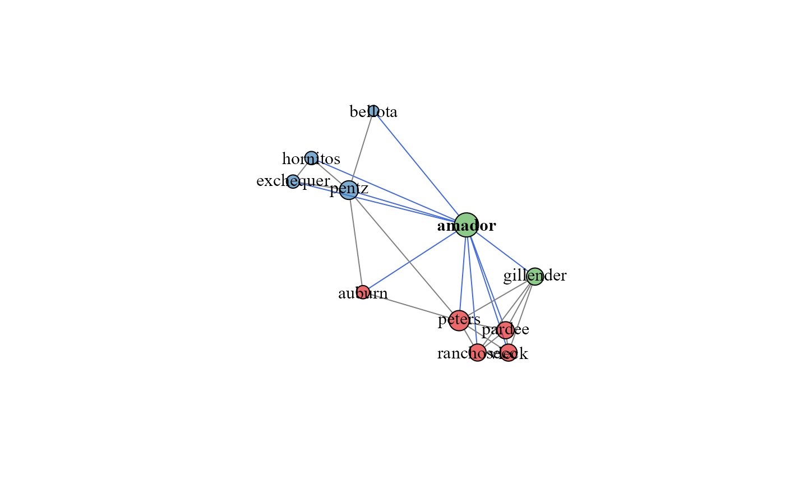
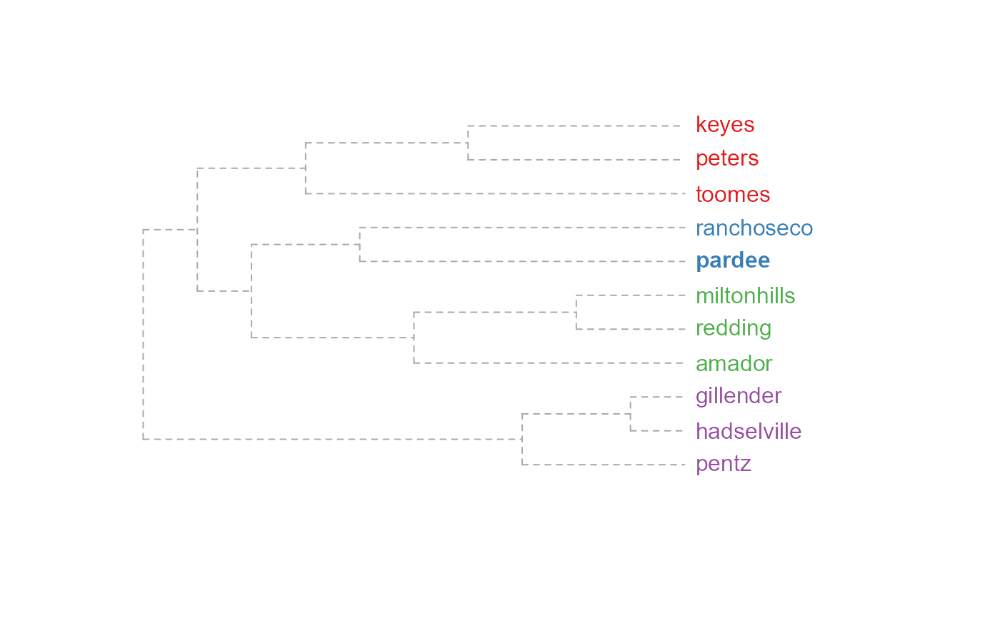
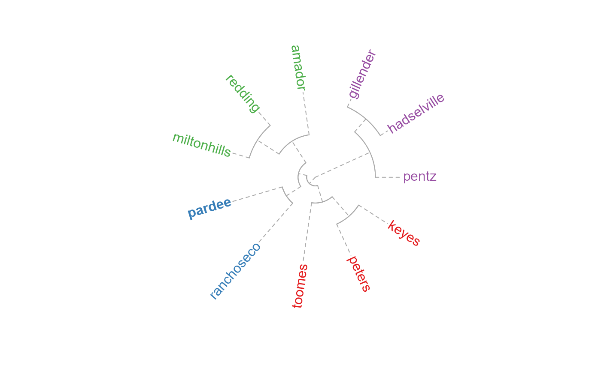

Plot a component relation graph
plotSoilRelationGraph.RdPlot a component relation graph based on an adjacency or similarity matrix.
plotSoilRelationGraph(m, s='', plot.style='network', graph.mode='upper', spanning.tree=NULL, del.edges=NULL, vertex.scaling.method='degree', vertex.scaling.factor=2, edge.scaling.factor=1, vertex.alpha=0.65, edge.transparency=1, edge.col=grey(0.5), edge.highlight.col='royalblue', g.layout=layout_with_fr, vertex.label.color='black', ...)
Arguments
| m | adjacency matrix |
|---|---|
| s | central component; an empty character string is interpreted as no central component |
| plot.style | plot style ('network', or 'dendrogram'), or 'none' for no graphical output |
| graph.mode | interpretation of adjacency matrix: 'upper' or 'directed', see details |
| spanning.tree | plot the minimim or maximum spaning tree ('min', 'max'), or, max spanning tree plus edges with weight greater than the n-th quantile specified in `spanning.tree`. See details and examples. |
| del.edges | optionally delete edges with weights less than the specified quantile (0-1) |
| vertex.scaling.method | 'degree' (default) or 'distance', see details |
| vertex.scaling.factor | scaling factor applied to vertex size |
| edge.scaling.factor | optional scaling factor applied to edge width |
| vertex.alpha | optional transparency setting for vertices (0-1) |
| edge.transparency | optional transparency setting for edges (0-1) |
| edge.col | edge color, applied to all edges |
| edge.highlight.col | edge color applied to all edges connecting to component named in |
| g.layout | an igraph layout function, defaults to |
| vertex.label.color | vertex label color |
| ... | further arguments passed to plotting function |
Note
This function is a work in progress, ideas welcome.
Details
Vertex size is based on a normalized index of connectivity: "degree" size = sqrt(degree(g)/max(degree(g))) * scaling.factor, or "distance" size = sqrt(distance(V->s)/max(distance(V->s))) * scaling.factor, where distance(V->s) is the distance from all nodes to the named series, s.
Edge width can be optionally scaled by edge weight by specifying an edge.scaling.factor value. The maximum spanning tree represents a sub-graph where the sum of edge weights are maximized. The mimimum spanning tree represents a sub-graph where the sum of edge weights are minimized. The maximum spanning tree is likely a more useful simplification of the full graph, in which only the strongest relationships (e.g. most common co-occurrences) are preserved.
The maximum spanning tree + edges with weights > n-th quantile is an experimental hybrid. The 'backbone' of the graph is created by the maximum spanning tree, and augmented by 'strong' auxillary edges-- defined by a value between 0 and 1.
The graph.mode argument is passed to igraph::graph_from_adjacency_matrix() and determines how vertex relationships are coded in the adjacency matrix m. Typically, the default value of 'upper' (the upper triangle of m contains adjacency information) is the desired mode. If m contains directional information, set graph.mode to 'directed'. This has the side-effect of altering the default community detection algorithm from igraph::cluster_fast_greedy to igraph::cluster_walktrap.
Value
an igraph `graph` object is invisibly returned
Author
D.E. Beaudette
Examples
# load sample data set data(amador) # create weighted adjacency matrix (see ?component.adj.matrix for details) m <- component.adj.matrix(amador) # plot network diagram, with Amador soil highlighted plotSoilRelationGraph(m, s='amador')# dendrogram representation plotSoilRelationGraph(m, s='amador', plot.style='dendrogram')# compare methods m.o <- component.adj.matrix(amador, method='occurrence') par(mfcol=c(1,2)) plotSoilRelationGraph(m, s='amador', plot.style='dendrogram') title('community matrix') plotSoilRelationGraph(m.o, s='amador', plot.style='dendrogram')title('occurence')# investigate max spanning tree plotSoilRelationGraph(m, spanning.tree='max') # investigate max spanning tree + edges with weights > 75-th pctile plotSoilRelationGraph(m, spanning.tree=0.75)# \donttest{ if(requireNamespace("curl") & curl::has_internet() & require(soilDB)) { # get similar data from soilweb, for the Pardee series s <- 'pardee' d <- siblings(s, component.data = TRUE) # normalize component names d$sib.data$compname <- tolower(d$sib.data$compname) # keep only major components d$sib.data <- subset(d$sib.data, subset=compkind == 'Series') # build adj. matrix and plot m <- component.adj.matrix(d$sib.data) plotSoilRelationGraph(m, s=s, plot.style='dendrogram') # alter plotting style, see ?plot.phylo plotSoilRelationGraph(m, s=s, plot.style='dendrogram', type='fan') plotSoilRelationGraph(m, s=s, plot.style='dendrogram', type='unrooted', use.edge.length=FALSE) }# }